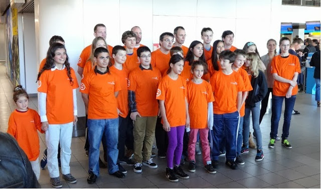
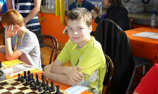

European Championship 2013
Dear people, This is my report of the European Championship (EC) in Budva , Montenegro. At 9 o'clock on 28 Augustus everyone from the Dutch delegation was at the airport, and then we flew to Belgrade .  The Dutch delegation We had to wait for three hours until another plane would fly us to Montenegro. Instead of me waiting for 3 hours I decided to play cards with other people. Then we flew to Montenegro , and there was good news: my suitcase was lost! It could mean that I would get a new laptop and new Nike clothing! Then Dolf told that the chances were very high that they would find back my suitcase, the courage sank to my shoes. Then we went by bus to the hotel, I shared a hotel room with Robby Kevlishvilli and Alik Tikranian. When we got into our hotel room we saw that it was more an apartment: you could also cook. The next morning we went to breakfast. Then began round 1 ! I played against Bojan Maksimovic. Bojan played a strange opening that I did not really know , happy I played it well and it became a good rook ending for me. Unfortunately that was not enough for the win. It was nice that I was stalemated for the first time in a real game. Robby also had a draw in the first round, he was a piece behind but then his opponent offered a draw! Then I began a feast at this hotel: mashed potatoes, the best there is. After dinner I and Alik walked in a street, with souvenir shops and ice cream stalls. After we had eaten a lot of ice we went back to the apartment , and we began to watch Eurosport Television. In round 2 I had to play against Kharitonov. Robby and I played next to each other, that was fun, we both had a good opening preparation, Robby won after 1 hour and I after 2 hours. Alik has unfortunately lost against 2350, people with such a rating may be a little to good for him. When we were in the apartment Alik was zapping on TV and came at a cooking station, with Dutch subtitles! From that day we watched that cooking canal about 2 to 3 hours per day.  The next day Dolf got bad news for me, the suitcase was found. He told me that I had to go to the airport the next day to say that suitcase was mine. I did not want to do that, because I wanted to prepare and driving is boring. Also, that suitcase is not of mine but of my mom, she bought it. In round 3 I played against Ciorica Mihai-Vlad, his father said good luck to me, very fair! After 18 moves I had spend 85 of my 90 minutes, luckily you get each move you play 30 seconds. The position was very sharp, and he was thinking very long. I could think in his time, he made a few mistakes, and I won a piece and the game. Then I went to the restaurant, I ate, I went to the apartement, I watched television,I slept, and I woke up. Next day!! I had to go to the airport, then I got my suitcase, went back to the apartement. Then changed all my clothes. Then I went preparing with Merijn van Delft again... just as in round 3 and 2 and 1. Then playing blitz with Robby, Alik and other guys, lost all games. In round 4 I played against Konaplev with the white pieces. I always say, white begins, white wins. Today that was not the case, I played a draw. I sacrificed a piece and I thought I would win it back, but he played it smart and got away with a draw. Today round 5, I played a great game, I played better then my opponent and came in a endgame with a pawn up. Shortly after I won another pawn and after a game of 5 hours he finally gave up. Because tomorrow is a rest day we were playing games till 3 am. Then Piet Peelen said we had to go sleep :(. We slept till 10 o'clock, we prepared for tomorrow, and played a few games of football against other Dutch guys and against the Turkish guys. Because I am a great keeper nobody scored in my goal expect two guys. But that does not matter. Then we went to eat in a real restaurant where I ate pizza, drank espresso. Tip: never buy espresso in a restaurant in Montenegro. In round 6 I sat again next to Robby we both have 4 out of 5 now!!! I played a draw, but something strange happened, normally after you play your 40st move you get 30 minutes added, this time he got his 30 minutes on move 39, if I would go to the arbiter I would have won, but NO then draw. That is what happened. Only 3 more rounds to go! with 4.5 out of 6 I can play for a title, but today also a draw, I missed very simple tactic and he could draw very easily. Round 8 I played bad and I lost. Round 9 I won very easy, he gave a pawn a way, another pawn, another pawn, another pawn, and the game. My brother Jorden won this game and has now 7.5 out of 9!!!! because the Russians lost he is European champion, CONGRATULATIONS!! Then I bought pizza and I went playing blitz with some guys. Then I went home, did my clothes in my suitcase, just like my shampoo. Then went blitzing for another 2 hours, slept for 1 hour and we had to go to the bus, I got in the bus, got in the airplane no.1, then in airplane no 2., slept in both airplanes, now we are in Holland (no idea were it lies). |